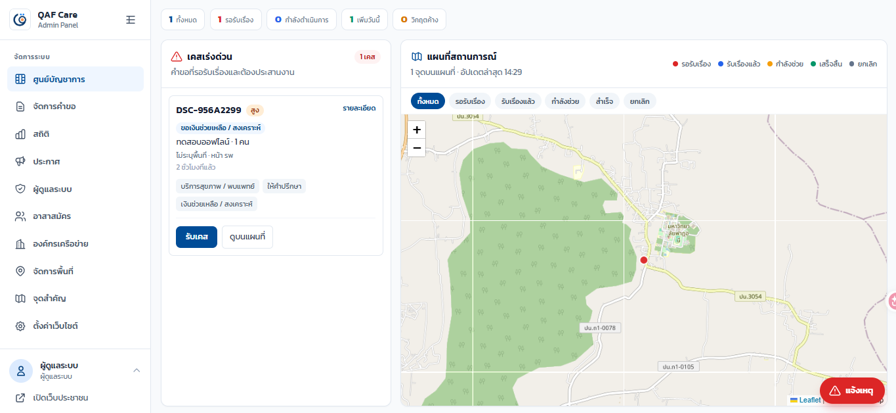
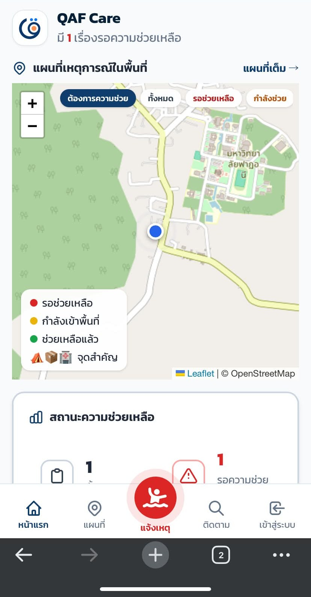
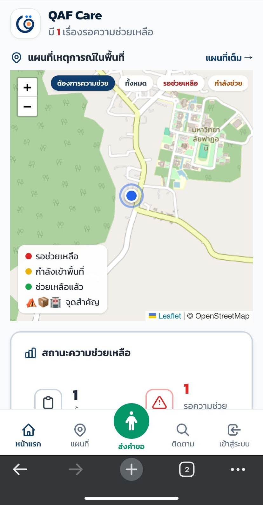

Dlite คือระบบกลางสำหรับรับเรื่อง แจ้งเหตุ และบริหารจัดการอาสาสมัคร รองรับทั้งงานภัยพิบัติ/น้ำท่วม และงานบรรเทาทุกข์ทั่วไป — ใช้งานผ่านมือถือได้ทันที ไม่ต้องติดตั้ง
ออกแบบมาเพื่องานจริง — เรียบง่ายสำหรับประชาชน ครบเครื่องมือสำหรับผู้ดูแล
ดูเหตุการณ์ทั้งหมดบนแผนที่แบบเรียลไทม์ พร้อมหมุดจุดสำคัญ (โรงพยาบาล จุดพักพิง ฯลฯ) ที่ผู้ดูแลกำหนดเอง
ประชาชนแจ้งผ่านมือถือได้ทันที เลือกสถานการณ์ อัปโหลดรูป และระบุพิกัดอัตโนมัติ
ระบบสมัครอาสาสมัครพร้อมทักษะและอุปกรณ์ แอดมินอนุมัติและมอบหมายเคสได้ในหน้าเดียว
ศูนย์บัญชาการสรุปเคสตามสถานะ จังหวัด และประเภท พร้อมกราฟแนวโน้มรายวัน
ส่งประกาศถึงประชาชนหรือทีมงาน พร้อมระดับความสำคัญ และแจ้งเตือนบนหน้าแรก
เปลี่ยนชื่อแอปและโลโก้ของหน่วยงานตัวเองได้จากหน้าตั้งค่า ไม่ต้องแก้โค้ด
ประชาชนติดตามสถานะคำขอของตัวเองได้ด้วยรหัสเคสหรือเบอร์โทร พร้อมไทม์ไลน์อัปเดต
อาสาสมัครเสนอความช่วยเหลือเข้ามาได้ แอดมินจับคู่กับเคส และโอนย้ายเคสระหว่างอาสา
ติดตั้งบนเซิร์ฟเวอร์หรือเครื่องในเครือข่ายของคุณเอง ข้อมูลทั้งหมดยู่ใน SQLite ไฟล์เดียว ไม่พึ่ง cloud service ภายนอก — ใช้งานในพื้นที่ที่อินเทอร์เน็ตไม่เสถียรได้
หน้าจอจริงจากระบบ Dlite — ใช้งานได้ทั้งมือถือและคอมพิวเตอร์

สลับโหมดได้จากหน้าตั้งค่า — ข้อมูลและระบบหลังบ้านใช้ร่วมกันได้ทั้งหมด
เน้นการแจ้งเหตุฉุกเฉินและกู้ภัย

เน้นบริการและสวัสดิการระยะยาว

ประชาชนใช้งานง่าย ทีมงานมีเครื่องมือครบ
รวมทุกความสามารถที่มีใน Dlite ณ ปัจจุบัน
เบา เรียบง่าย ดูแลง่าย
พร้อมใช้ในไม่กี่นาที — ต้องการเพียง PHP และเว็บเซิร์ฟเวอร์ทั่วไป
ดาวน์โหลดหรือ clone repository
git clone <repo-url>อัปโหลดขึ้น hosting ที่รองรับ PHP (Apache/Nginx) ชี้ document root ไปที่โฟลเดอร์โปรเจกต์
เปิดเว็บ → ระบบสร้างฐานข้อมูล SQLite ให้อัตโนมัติ แล้วล็อกอิน admin เริ่มตั้งค่าแบรนด์/โหมด
สร้างบัญชีแอดมิน/ผู้ดู เพิ่มอาสาสมัคร หรือเปิดรับสมัครอาสาออนไลน์พร้อมอนุมัติ
Dlite เป็นระบบเปิด — ศึกษา แก้ไข และนำไปใช้กับพื้นที่ของคุณได้
ดูโค้ดบน GitHub